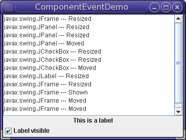

Lección: Escribiendo Listener Events
Sección: Implementando Listeners para los Eventos Comunmente Manejados
Cómo Escribir un Component Listener
El Component listener es un interfaz de listener para recibir eventos de componentes. Un componente es un objeto que teniendo una representación gráfica puede ser mostrado en la pantalla y que puede interactuar con el usuario. Algunos de los ejemplos de componentes son los botones, las casillas de verificación, y las barras de progreso de un interfaz gráfico de usuario típico.
La clase que está interesada en procesar un evento de componente implementa esta interfaz y todos los métodos que contiene, o extiende la clase ComponentAdapter abstracta anulando solo los métodos de interés. El objeto listener creado desde la clase es entonces registrado con un componente usando el método addComponentListener del componente. Cuando el tamaño, ubicación, o la visibilidad del componente cambia, el método relevante en el objeto listener es invocado, y se le pasa el ComponentEvent.
Uno o más eventos de componente son disparados por un objeto Component inmediatamente después de
que el componente sea ocultado, hecho visible, movido, o redimensionado.
Los eventos componente-ocultado y componente-mostrado ocurren sólo como el resultado de las llamadas al
método setVisible del componente. Por ejemplo, una ventana podría ser miniaturizada a un icono
(iconificada) sin que se disparase un evento de componente-ocultado.
Para escribir un programa simple de Component listener, siga los pasos mencionados abajo:
-
Declare una clase que implemente Component listener. Por ejemplo:
public class ComponentEventDemo ... implements ComponentListener - Identifique los componentes para los que le gustaría capturar los eventos. Por ejemplo, panel, etiqueta, casilla de verificación, etc.
-
Agregue el Component listener a los componentes identificados. Por ejemplo:
.... label.addComponentListener(this); ..... checkbox.addComponentListener(this); .... panel.addComponentListener(this); ... frame.addComponentListener(this); -
Finalmente, capture los diferentes eventos de esos componentes usando cuatro métodos de Component Listener
como se muestra abajo:
public void componentHidden(ComponentEvent e) { displayMessage(e.getComponent().getClass().getName() + " --- Hidden"); } public void componentMoved(ComponentEvent e) { displayMessage(e.getComponent().getClass().getName() + " --- Moved"); } public void componentResized(ComponentEvent e) { displayMessage(e.getComponent().getClass().getName() + " --- Resized "); } public void componentShown(ComponentEvent e) { displayMessage(e.getComponent().getClass().getName() + " --- Shown"); }
El ejemplo siguiente demuestra los eventos de componente. La ventana contiene un panel que tiene una etiqueta y una casilla de verificación. La casilla de verificación contrila si la etiqueta es visible. Un área de texto muestra un mensaje cada vez que la ventana, el panel, la etiqueta, o la casilla de verificación dispara un evento de componente.

Intente esto:
-
Pulse el botón Lanzar para ejecutar ComponentEventDemo usando
Java™ Web Start (
descargue KDJ 7 o posterior). Alternativamente, para compilar y ejecutar el ejemplo por sí
mismo, consulte el
índice de ejemplos.

- Cuando la ventana aparece, uno o más eventos componente-mostrado han sido disparados.
-
Pulse la casilla de verificación para ocultar la etiqueta.
La etiqueta dispara un evento componente-oculto. El panel dispara los eventos component-movido y componente-redimensionado. La casilla de verificación dispara un evento componente-movido. -
Pulse la casilla de verificación de nuevo para mostrar la etiqueta.
La etiqueta dispara un evento componente-mostrado. El panel dispara los eventos componente-movido y componente-redimensionado. La casilla de verificación dispara un evento componente-movido. -
Iconifique y después desiconifique la ventana.
Usted no obtiene eventos componente-oculto o -mostrado. Si quiere ser notificado sobre los eventos de iconificación, debería usar un window listener o un window state listener. -
Redimensione la ventana.
Verá eventos componente-redimensionado (y posiblemente componente-movido) desde los cuatro componentes — etiqueta, casilla de verificación, panel, y marco. Si el marco y el gestor de diseño del panel no hacen cada componente tan ancho como sea posible, el panel, la etiqueta, y la casilla de verificación no habrán sido redimensionadas.
Puede encontrar el código de la demostración en
ComponentEventDemo.java. Aquí está simplemente el código relacionado con el manejo de los
eventos de componente:
public class ComponentEventDemo ... implements ComponentListener {
static JFrame frame;
JLabel label;
...
public ComponentEventDemo() {
...
JPanel panel = new JPanel(new BorderLayout());
label = new JLabel("This is a label", JLabel.CENTER);
label.addComponentListener(this);
panel.add(label, BorderLayout.CENTER);
JCheckBox checkbox = new JCheckBox("Label visible", true);
checkbox.addComponentListener(this);
panel.add(checkbox, BorderLayout.PAGE_END);
panel.addComponentListener(this);
...
frame.addComponentListener(this);
}
...
public void componentHidden(ComponentEvent e) {
displayMessage(e.getComponent().getClass().getName() + " --- Hidden");
}
public void componentMoved(ComponentEvent e) {
displayMessage(e.getComponent().getClass().getName() + " --- Moved");
}
public void componentResized(ComponentEvent e) {
displayMessage(e.getComponent().getClass().getName() + " --- Resized ");
}
public void componentShown(ComponentEvent e) {
displayMessage(e.getComponent().getClass().getName() + " --- Shown");
}
public static void main(String[] args) {
...
//Create and set up the window.
frame = new JFrame("ComponentEventDemo");
...
JComponent newContentPane = new ComponentEventDemo();
frame.setContentPane(newContentPane);
...
}
}
La IPA de Component Listener
El Interfaz de ComponentListener
Todos estos métodos están también en la clase adaptadora,
ComponentAdapter
.
| Método | Propósito |
|---|---|
| componentHidden(ComponentEvent) |
Se llama después de que el componente escuchado se oculta como resultado de la llamada al método
setVisible.
|
| componentMoved(ComponentEvent) | Se llama después de que el componente escuchado se mueve, relativo a su contenedor. Por ejemplo, si una ventana es movida, la ventana dispara un evento componente-movido, pero los componentes que esta contiene no. |
| componentResized(ComponentEvent) | Se llama después de que el tamaño (límites rectangulares) del componente escuchado cambia. |
| componentShown(ComponentEvent) |
Se llama después de que el componente escuchado se hace visible como resultado de ser llamado el método
setVisible.
|
| Método | Propósito |
|---|---|
| Component getComponent() |
Devuelve el componente que disparó el evento. Puede usar esto en vez del método getSource.
|
Ejemplos que Usan Component Listeners
La tabla siguiente lista los ejemplos que usan component listeners.| Ejemplo | Dónde está descrito | Notas |
|---|---|---|
ComponentEventDemo
|
Esta sección | Informa de todos los eventos de componente que ocurren en varios componentes para demostrar las circunstancias bajo las cuales se disparan los eventos de componente. |